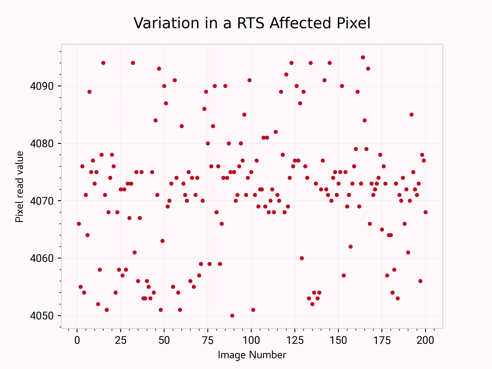
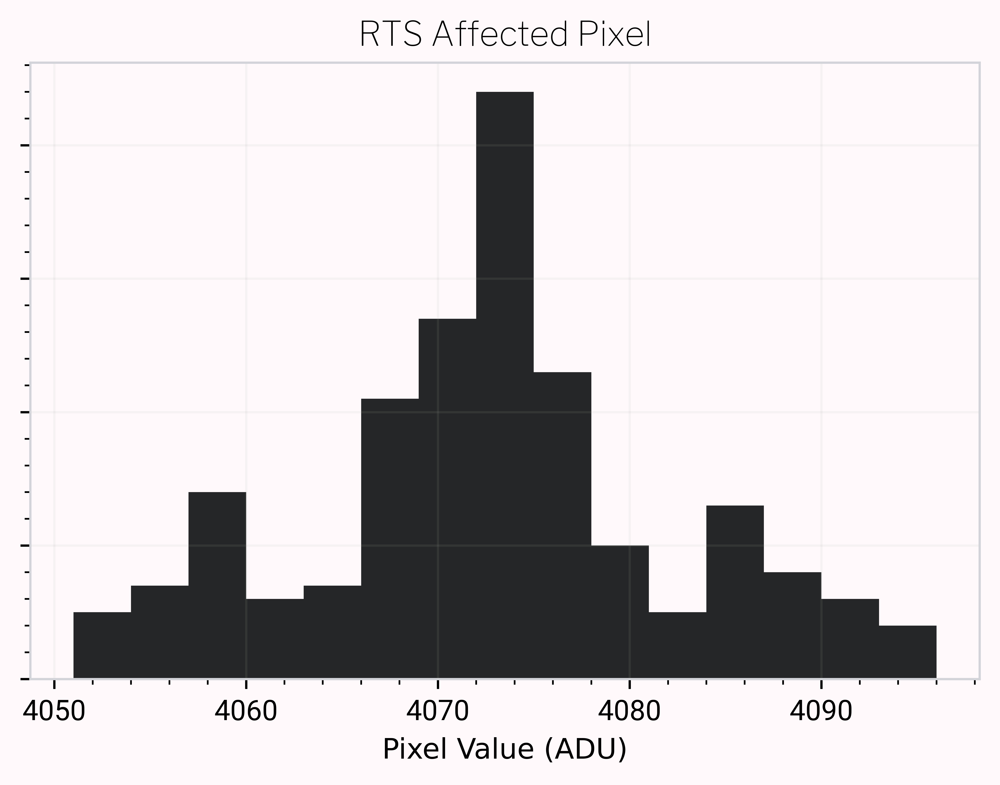
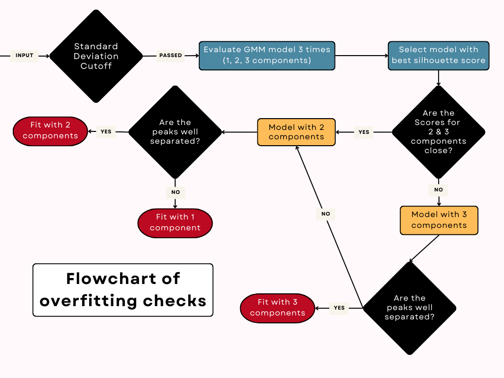
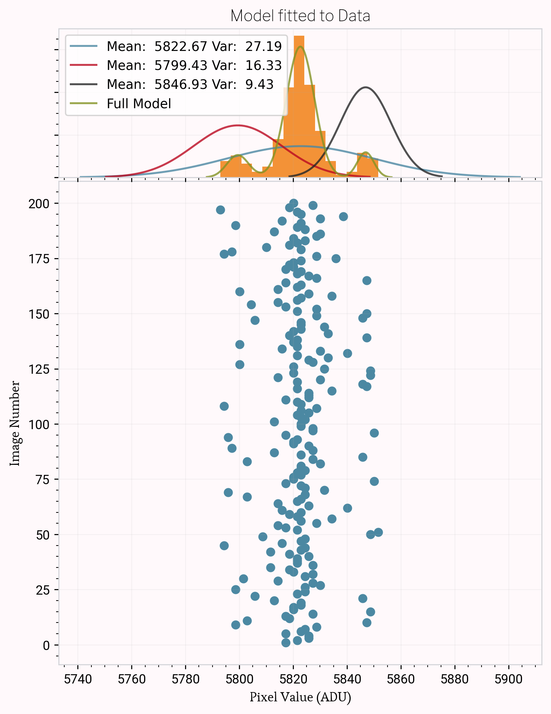
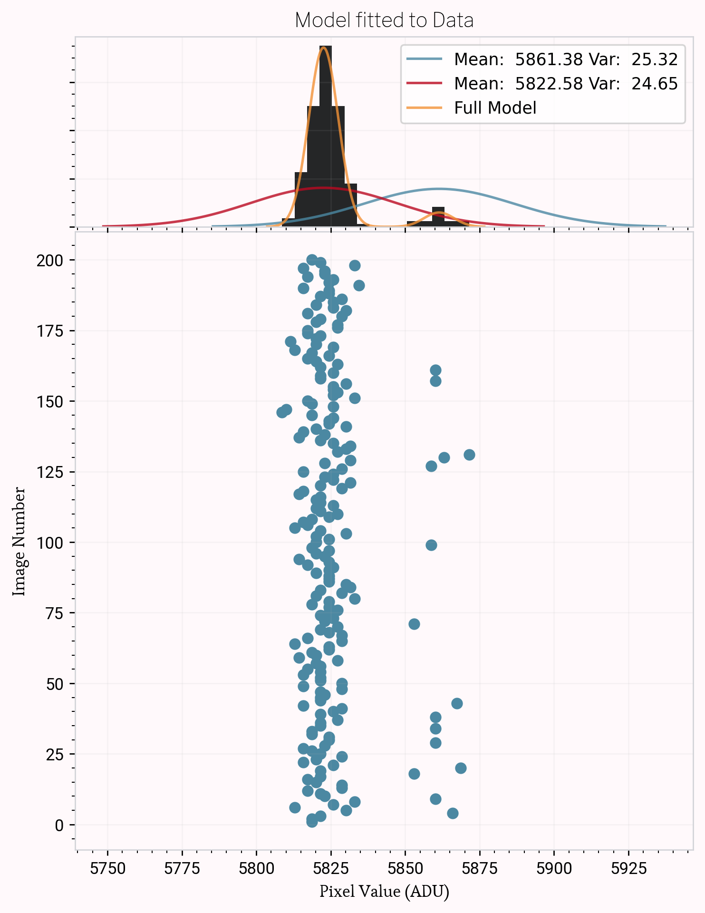

Modeling RTS¶
What is Random Telegraph Signal?¶
Random Telegraph Signal is the result of a randomly occurring jumps between discrete voltage levels, whose source is the Metal-Oxide Semiconductor Field Effect Transistor (MOSFET) in each pixel in a CMOS sensor. RTS shows up in bias frames, and any other time where the incoming signal is very low. This is because the temporal signal or light signal is usually dominant over RTS, which can have a read noise anywhere about 20e- and above. Due to correlated double sampling, where the read out value of a pixel is taken as the difference between the activated pixel voltage and the reset voltage, we see a multi-modal distribution of data points:
When we take a look at this in histogram form, we can clearly see the trimodal behaviour:
We want to investigate all of the pixels so that we can find out more about Random Telegraph Signal behavior.
Gaussian Mixture Models and RTS Properties¶
As we plotted histograms for the pixels on a detector, we found unimodal, bimodal, and trimodal pixel noise distributions. Our end goal was to parametrize the noise by finding the peak locations and variances for each peak present. After some trial and error with Maximum Likelihood fitting and Kernel Density Estimation on the histograms, Gaussian Mixture Modelling seemed to be the best option to non-parametrically model the data (not the histogram representation of it).
Gaussian Mixture Model Basics¶
Gaussian Mixture Modelling is a parametric probability density function represented as a weighted sum of Gaussian component densities. It attempts to represent the data as a sum of weighted gaussians with unique means, and covariances:
After determining the number of components in the data, the parameters are estimated from the data by the iterative Expectation-Maximization algorithm. We use sklearn to implement this modelling method in our code.
A difficult part of this implementation is determining the number of components needed to model the data. This changes for each pixel, so we wanted an automated way to determine this, without overfitting.
The primary method we use to do this is a silhouette score. This is calculated by the GMM class provided by sklearn, and is a simple calculation.
For a given sample, the likelihood that it belings to a cluster is determined by:

Where, a represents intra-cluster distance from the sample, and b is the inter-cluster distance.
Then to avoid overfitting, we go through a series of checks illustrated below:
At the end, we get parameters describing the data:
peak_location : TYPE: list(float), length = num_peaks
DESCRIPTION: The means of each of the Gaussian modes calculated by GMM
peak_widths : TYPE: list(float), length = num_peaks
DESCRIPTION: The covariance of each Gaussian mode calculated by GMM
num_peaks : TYPE: int
DESCRIPTION: The number of Gaussians used to model the distribution of values of the pixel
amp : TYPE: list(float)
DESCRIPTION: The weights of each gaussian in the mixture. All weights sum to 1.
 
RTS Properties¶
After modelling a subset of 500x500 pixels in each image in the test data (200 bias frames taken with a QHY411 CMOS camera), we can investigate the properties of the pixels affected by telegraph noise. In doing so, we find the following:
7.8% of examined pixels are multimodal.
The locations are consistent.
Majority of pixels are trimodal; though unexpectedly, a small number of pixels have a bimodal distribution.
When run on all pixels in a 500x500 pixel grid, 12% of pixels are affected
73% of RTS pixels neighbor another RTS pixel.
Error Propagation¶
With the means, amplitudes, and covariances of individual gaussians we can follow standard error propagation methods to calculate the read noise of each pixel. This is possible because our model essentially models the probability distribution function of the data.
To get from covariance to a variance of each of our 1D gaussians:
And then for multiple components, we can propagate the parameters to get a single read nosie for a pixel.
where the read noise is the square root of sigma.